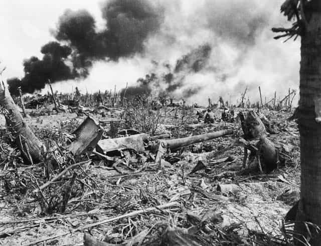

Napoleon said something like this about China:
Here rests a sleeping giant, let it sleep, for when it awakens, it will stun the world.
Jack London wrote a short story, “The Unparalleled Invasion”, on that theme.
The author in brief
A century ago, leftists didn’t look like Carl the Cuck, AIDS Skrillex, or Trigglypuff.
Proverbially, a conservative is a liberal who got mugged. The reverse proverb says a liberal is a conservative who got arrested. Jack London exemplified that, believing socialism would solve capitalism’s problems. It hadn’t been tried on a large scale yet, so I’ll give him a break for not knowing socialism is worse.
Moreover, this was before cultural Marxism began. Jack London certainly was no self-hating dupe or limp noodled SJW. Instead, he was quite the opposite, so today’s leftists disown him utterly. I’d have a beer with this guy if we were contemporaries.
Other than that, he lived life to the fullest. Actually, he would’ve made a great contributor to ROK.
“The Unparalleled Invasion”

Let’s hope it never comes to this.
Published first in 1910, and later in The Strength of the Strong, this recalls the future war beginning in 1976. After the Japanese defeated the Russians in 1904, things went wrong.
The Western powers had little influence on China. The language barrier caused complete mutual incomprehension. However, the culturally similar and already-industrialized Japanese achieved success. They colonized China, brought industry, and modernized its army.
In China’s councils of empire were the Japanese emissaries. In the ears of the statesmen whispered the Japanese statesmen. The political reconstruction of the Empire was due to them. They evicted the scholar class, which was violently reactionary, and put into office progressive officials. And in every town and city of the Empire newspapers were started. Of course, Japanese editors ran the policy of these papers, which policy they got direct from Tokio. It was these papers that educated and made progressive the great mass of the population.
Sound familiar? Surprisingly, the Chinese actually benefited from this subversion! The Japanese apparently forgot to trash China’s culture, plunder their economy, invite millions of incompatible migrants, etc. Sensibly, they didn’t want to wreck their own gold mine.
However, China’s sleeping giant awakened. Invigorated by industrialization, first they kicked out the Westerners, and then the Japanese, even taking over Japan’s Asian colonies. Following that, the Chinese were peaceful. The Japanese became surprisingly passive and inwardly-focused.
Soon, this dynamic changed. Modern technology increased life expectancy. China’s population grew exponentially. Reaching half a billion by 1970, their numbers slightly exceeded the entire White race, raising concerns abroad. Fully industrialized by then, China became a serious threat.
First they took over Vietnam—still a French colony in this timeline. France retaliated, but naval superiority yielded no advantage. France’s land invasion ended disastrously. Following that, the Chinese conquered the rest of Southeast Asia.
Then they took over Siberia. (In the real world, this possibility scared the daylights out of the Soviets.) Here’s what happened:
The process was simple. First came the Chinese immigration (or, rather, it was already there, having come there slowly and insidiously during the previous years). Next came the clash of arms and the brushing away of all opposition by a monster army of militia-soldiers, followed by their families and household baggage. And finally came their settling down as colonists in the conquered territory. Never was there so strange and effective a method of world conquest.
After that, they began spreading elsewhere through Asia. Who could stop them?
China’s population must be seven hundred millions, eight hundred millions, nobody knew how many millions, but at any rate it would soon be a billion. There were two Chinese for every white-skinned human in the world… There was talk of all countries putting bounties on children to increase the birth rate, but it was laughed to scorn by the arithmeticians, who pointed out that China was too far in the lead in that direction.
Where have we heard that before? Smugly, China’s Emperor basically told the world, “Come and get us!” The Western nations set aside their differences and mobilized. The mission was for containment. Biological warfare did the dirty work—a pretty grim end.
Five years and hundreds of millions of treasure were consumed, and then the world moved in—not in zones, as was the idea of Baron Albrecht…
That wasn’t me! After Western nations repopulated the desolate land that was China…
It was in 1987, the Great Truce having been dissolved, that the ancient quarrel between France and Germany over Alsace-Lorraine recrudesced.
Despite renewed warfare, the world renounced biological weapons forever.
What really happened

At least we put the kibosh on the Kaiser, boy howdy!
In 1910, Jack London wasn’t holding a crystal ball. Still, changing the timeline and the players involved produces prophetic historical and modern parallels.
The French-German dust-up began first in 1914, though merely part of the horror engulfing Europe and elsewhere. In hindsight, all this was a terrible mistake. WWI launched a catastrophic chain of events: Communism, WWII, a string of spit-in-your-eye wars, and unfathomable damage to our culture. After a century, reversing this train ride to hell is long overdue.
The Japanese didn’t subvert China; they invaded in 1937. The Chinese became the victims, not the marauders, suffering an estimated 15-20 million dead. Americans typically have little awareness of how horrific it got, or even forget this item from history class. For that matter, few students remember how many Americans died in WWII.
WMDs featured in both World Wars. However, biological warfare was a Japanese specialty—another forgotten detail. The germ bomb researchers went unpunished, in exchange for translating documents about their human experimentation in China.
Ever heard of places like Unit 731?
Chairman Mao tried to industrialize China, but bungled it disastrously. His successors succeeded, and foreign investment provided capital. The cheap labor situation is wrecking industry abroad, but that’s another story. Eventually, China became Communist in name only. They also instituted the one-child policy. China’s population is about 1.4 billion, climbing but slowing. They’re coping fairly well with the infrastructure strain.
Meanwhile, exponential growth continues unabated in vast regions elsewhere. Developed countries have become safety valves for Third World overpopulation. In the 1970s, only “extremists” cared about demographic pressures. Good liberal opinion called these concerns overblown alarmism. Today, good liberal opinion says our demise is inevitable.
They built their wall long ago.
China has rather frosty relations with some close neighbors. Further, their expatriates are acquiring a reputation for ethnic networking. However, as for the West, fortunately China would rather make consumer goods than make war. They’d be good friends to have. Among East Asia, only the Norks are particularly aggressive.
Anyway, if China needs extra territory for Lebensraum, Mexico is a large country with awesome beaches…
What’s next?
The only unparalleled element is modern Western governments decisively defending their countries. Jack London understood about tyrants and greedy plutocrats. However, he didn’t foresee today’s politicians being this irresponsible and hostile to the public, or the globalist regime destroying their own nations. In 1910, that absurdity was unimaginable.
If the Endless Night results, East Asia becomes the world’s last superpower. China might make Europe a theme park. Living on a reservation would be somewhat better than unabated globalist misrule. Ethnic networking, subversion, and domination by the Chinese actually would be an improvement over some varieties.
However, a much better outcome would be the sleeping giant of the West awakening soon.
Read More: Why China Is Winning The Game Of Civilization